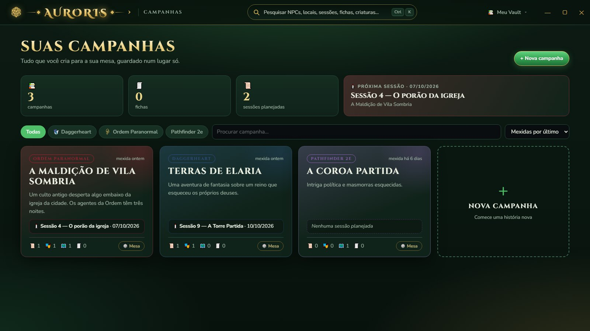
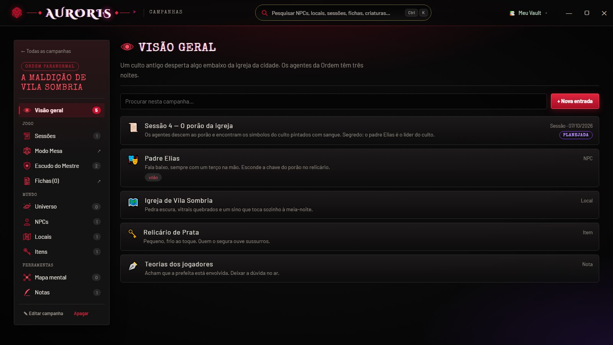
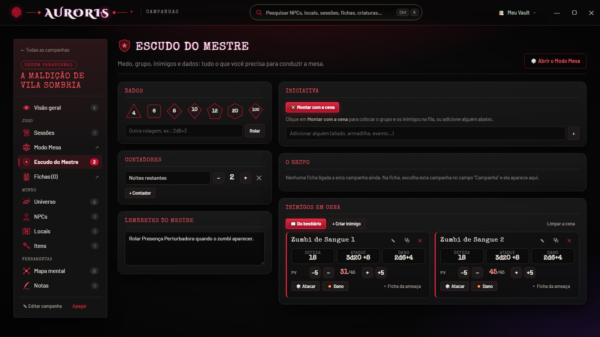
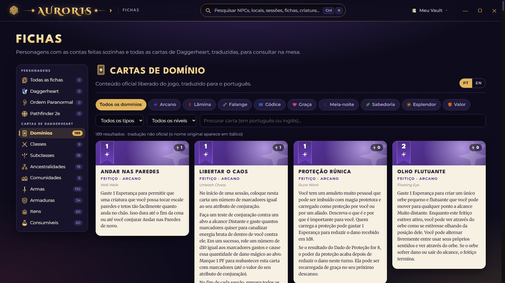
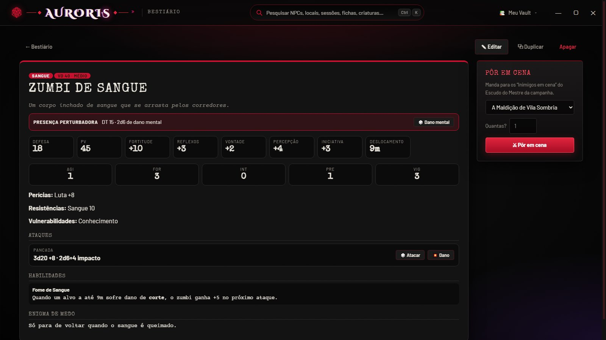
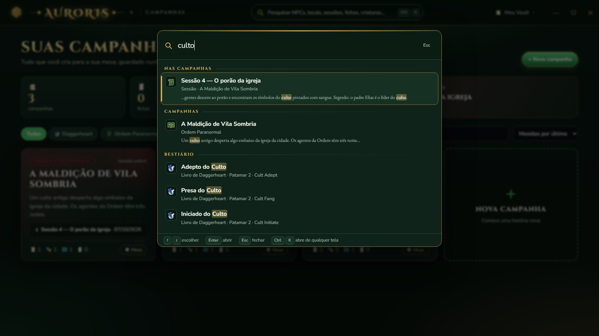
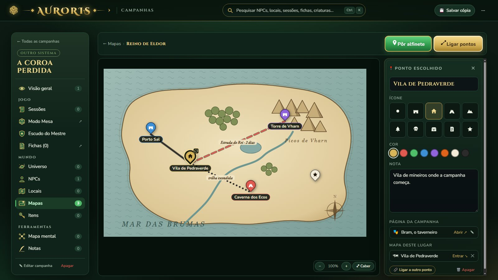

Campanhas
Planeje sessões, escreva NPCs, locais, itens e a história do mundo. Ligue páginas com @ (como um wiki), veja tudo num mapa mental e marque cidades, caminhos e segredos em cima dos seus mapas.
O aplicativo perfeito para mestres
O caderno do mestre e do jogador: suas campanhas, fichas com as contas feitas sozinhas, criaturas e dados — tudo num programa só.
Windows 10 e 11 · grátis · como instalar
Feito para quem mestra e para quem joga, com a cara de um grimório.
Planeje sessões, escreva NPCs, locais, itens e a história do mundo. Ligue páginas com @ (como um wiki), veja tudo num mapa mental e marque cidades, caminhos e segredos em cima dos seus mapas.
Medo, iniciativa, inimigos em cena com vida e ataques, contadores e lembretes. E o Modo Mesa, com o roteiro da sessão à mão.
Daggerheart, Ordem Paranormal e Pathfinder 2e com as contas feitas sozinhas — e todas as cartas de Daggerheart traduzidas.
Os 129 adversários oficiais de Daggerheart, traduzidos, e suas próprias ameaças de Ordem Paranormal — prontos para pôr em cena.
Dualidade de Daggerheart, testes de Ordem e rolagens livres com animação. Geradores de nomes, NPCs, tavernas, criaturas e ganchos.
Tudo fica numa pasta do seu computador (o vault), um arquivo por campanha, ficha e criatura — com cópia automática todo dia.
Passeie pelas telas do Auroris — elas trocam sozinhas, ou escolha uma aba.







Leva menos de um minuto.
Clique em Baixar para Windows lá em cima. Vem o arquivo “Instalar-Auroris.exe”.
Dois cliques no arquivo baixado. Avançar → Instalar → Concluir.
Na primeira vez, escolha onde guardar a pasta com suas campanhas, fichas e criaturas.
Baixe a versão nova e instale por cima. Seu vault não é mexido.
“O Windows protegeu o computador”? Clique em Mais informações e depois em Executar assim mesmo. Esse aviso aparece porque o Auroris é feito em casa e não tem a assinatura digital paga que as empresas compram.
Sim. O Auroris é feito para jogar com os amigos, sem venda e sem anúncios.
Numa pasta do seu computador que você escolhe (o vault). Nada vai para a internet. O Auroris guarda sozinho uma cópia de tudo por dia, das últimas duas semanas.
No Auroris, abra o menu do vault (no topo) → “Abrir a pasta do vault”. Copie o arquivo da campanha, ficha ou criatura e mande. Ele coloca na pasta certa do vault dele e abre o Auroris.
Por enquanto, só no Windows 10 e 11 (64 bits).
Só para baixar. Depois de instalado, o Auroris funciona sem internet.